Ciência em traços brasileiros
A matéria
também conta
histórias.
118 elementos. Muitas formas de descobrir o mundo. Um encontro entre química, arte e cotidiano.
Desenrole essa descobertaCORDEL DOS ELEMENTOS ELEMENTOS NO NOSSO COTIDIANO
Por onde começar?
Cada elemento,
uma nova conversa.
O alfabeto da matéria
Um varal de elementos
Escolha um folheto e descubra a química no cotidiano.
118 elementos encontrados
Grupos nas colunas, períodos nas linhas. Role a tabela horizontalmente; os resultados da busca permanecem em sua posição.
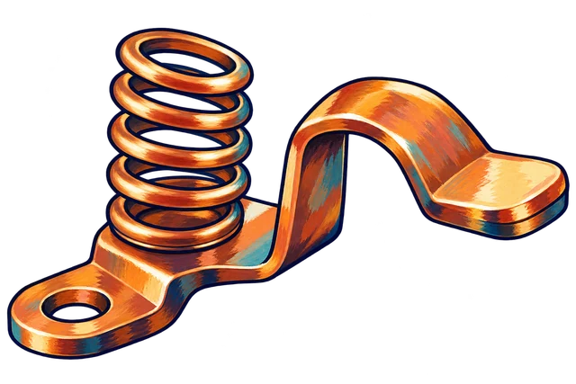
Berílio9,0122 uEm ligas com cobre, aumenta a resistência de molas e contatos. 5Sólido25 °C / 1 atmSemimetal B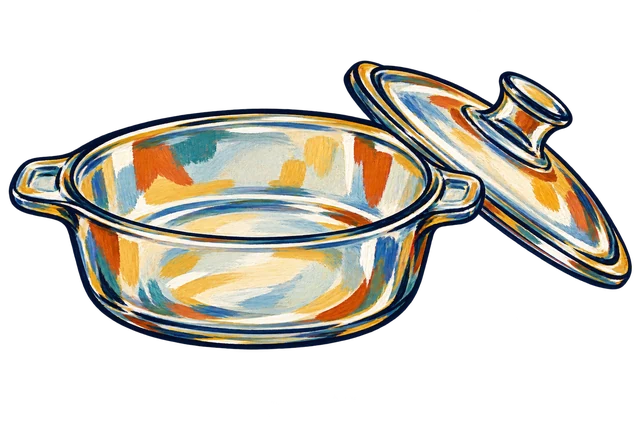
Boro10,81 uSeu óxido integra vidros resistentes ao calor. 6Sólido25 °C / 1 atmNão metal CCarbono12,011 uNa forma de grafite, está na ponta do lápis. 7Gasoso25 °C / 1 atmNão metal NNitrogênio14,007 uO gás N₂ ajuda a conservar alimentos em embalagens. 8Gasoso25 °C / 1 atmNão metal O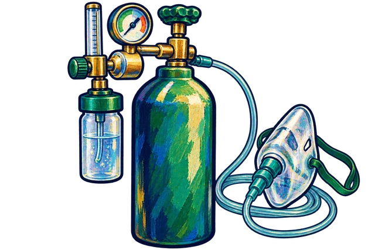
Oxigênio15,999 uO gás O₂ é usado em tratamentos respiratórios. 9Gasoso25 °C / 1 atmHalogênio FFlúor18,998 uFluoretos estão em muitos cremes dentais. 10Gasoso25 °C / 1 atmGás nobre Ne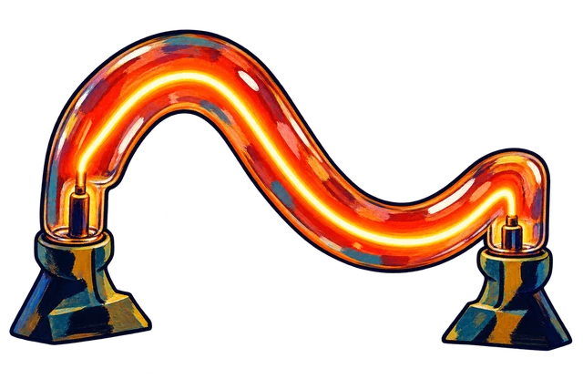
Neônio20,180 uSeu gás produz luz vermelho-alaranjada em tubos. 11Sólido25 °C / 1 atmMetal alcalino NaSódio22,990 uÍons de sódio estão no NaCl, principal componente do sal. 12Sólido25 °C / 1 atmMetal alcalinoterroso MgMagnésio24,305 uSuas ligas leves são usadas no corpo de algumas câmeras. 13Sólido25 °C / 1 atmOutro metal Al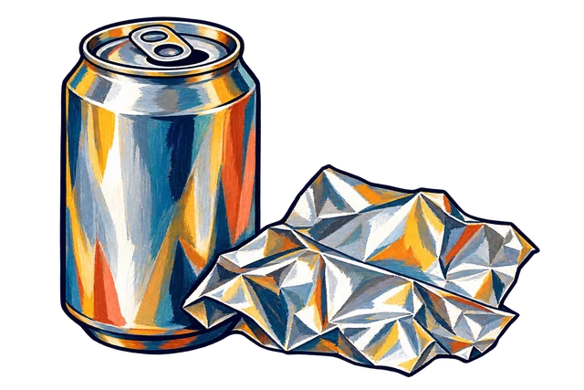
Alumínio26,982 uEstá em latas e no papel-alumínio da cozinha. 14Sólido25 °C / 1 atmSemimetal Si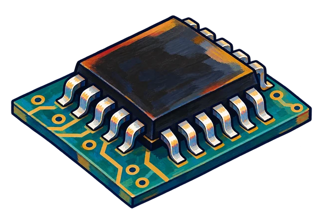
Silício28,085 uÉ um semicondutor usado em microchips. 15Sólido25 °C / 1 atmNão metal P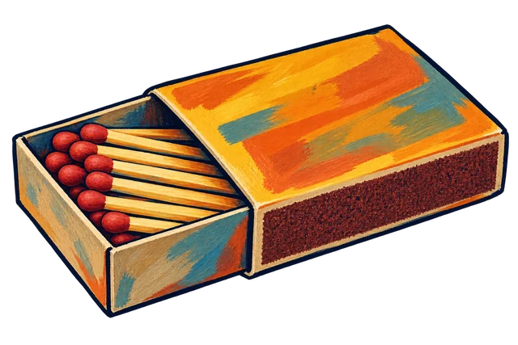
Fósforo30,974 uO fósforo vermelho está na faixa de atrito da caixa. 16Sólido25 °C / 1 atmNão metal S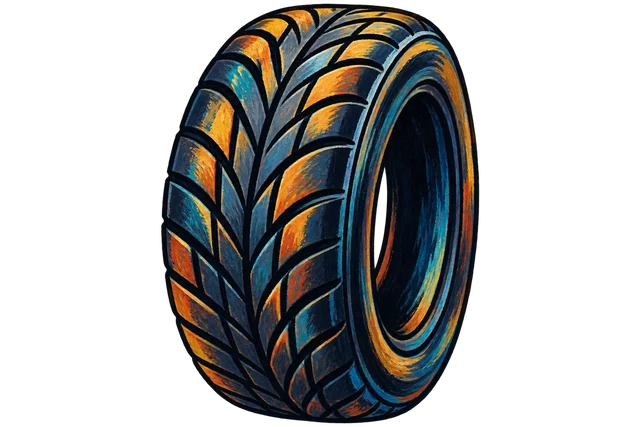
Enxofre32,06 uNa vulcanização, ajuda a dar resistência à borracha dos pneus. 17Gasoso25 °C / 1 atmHalogênio ClCloro35,45 uNa água sanitária, aparece em compostos como hipocloritos. 18Gasoso25 °C / 1 atmGás nobre Ar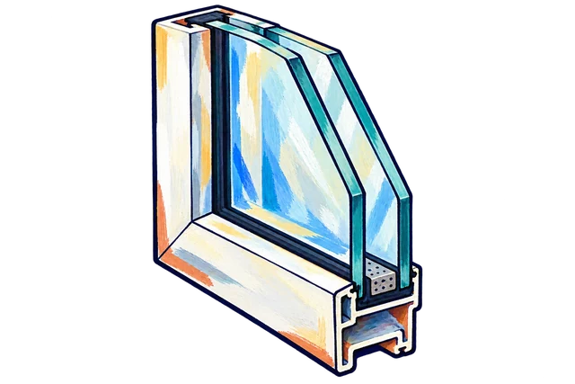
Argônio39,95 uEntre vidros de certas janelas, ajuda no isolamento térmico. 19Sólido25 °C / 1 atmMetal alcalino KPotássio39,098 uSeus compostos são usados em fertilizantes. 20Sólido25 °C / 1 atmMetal alcalinoterroso CaCálcio40,078 uSeus compostos participam da produção do cimento. 21Sólido25 °C / 1 atmMetal de transição ScEscândio44,956 uIntegra ligas de alumínio em quadros de certas bicicletas. 22Sólido25 °C / 1 atmMetal de transição TiTitânio47,867 uO dióxido de titânio é um pigmento branco de tintas. 23Sólido25 °C / 1 atmMetal de transição VVanádio50,942 uEm ligas de aço, aumenta a resistência de ferramentas. 24Sólido25 °C / 1 atmMetal de transição Cr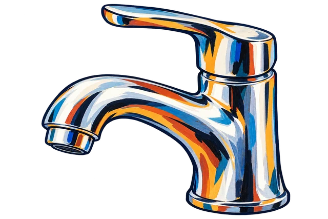
Cromo51,996 uO revestimento de cromo dá brilho e protege peças. 25Sólido25 °C / 1 atmMetal de transição Mn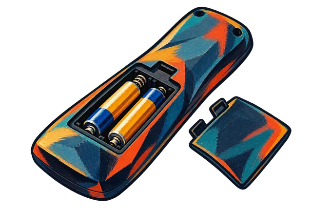
Manganês54,938 uO dióxido de manganês é usado em pilhas alcalinas. 26Sólido25 °C / 1 atmMetal de transição Fe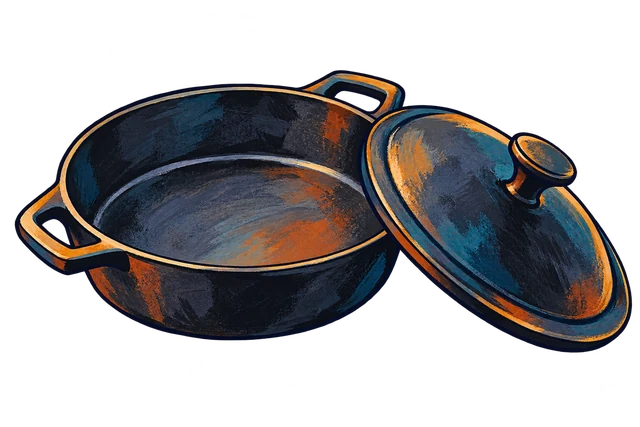
Ferro55,845 uÉ a base de ligas como o aço e o ferro fundido. 27Sólido25 °C / 1 atmMetal de transição Co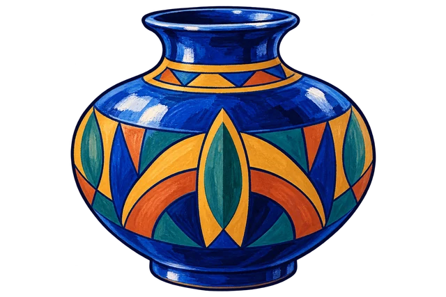
Cobalto58,933 uSeus compostos dão tons azuis a cerâmicas. 28Sólido25 °C / 1 atmMetal de transição Ni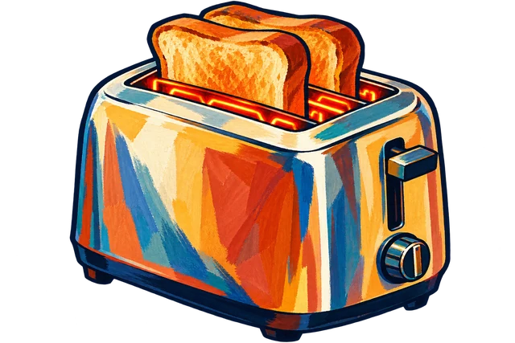
Níquel58,693 uLigas de níquel e cromo aquecem torradeiras. 29Sólido25 °C / 1 atmMetal de transição Cu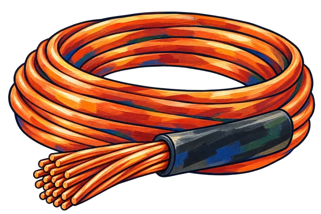
Cobre63,546 uConduz eletricidade nos fios. 30Sólido25 °C / 1 atmOutro metal ZnZinco65,38 uReveste o aço galvanizado e ajuda a evitar corrosão. 31Sólido25 °C / 1 atmOutro metal Ga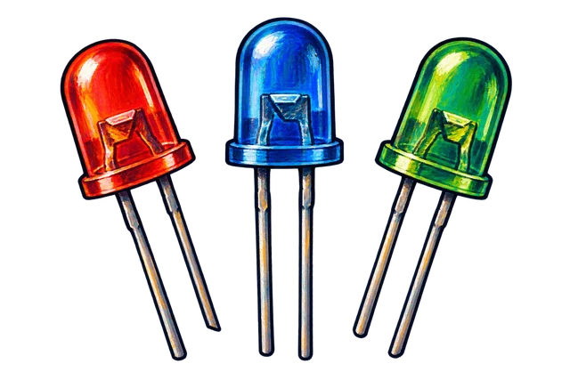
Gálio69,723 uCompostos de gálio são usados na fabricação de LEDs. 32Sólido25 °C / 1 atmSemimetal Ge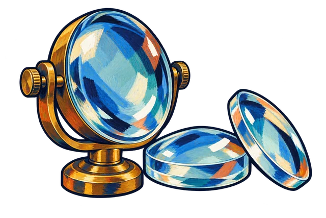
Germânio72,630 uSeu óxido é usado em vidros de lentes especiais. 33Sólido25 °C / 1 atmSemimetal As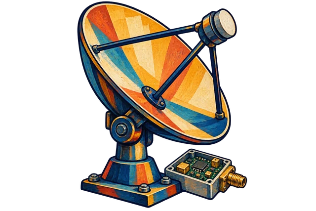
Arsênio74,922 uO arsenieto de gálio é um semicondutor usado em circuitos. 34Sólido25 °C / 1 atmNão metal SeSelênio78,971 uSulfeto de selênio aparece em alguns xampus anticaspa. 35Líquido25 °C / 1 atmHalogênio BrBromo79,904 uO brometo de prata registra a luz em filmes fotográficos. 36Gasoso25 °C / 1 atmGás nobre KrCriptônio83,798 uSeu gás é usado em algumas lâmpadas de flash. 37Sólido25 °C / 1 atmMetal alcalino RbRubídio85,468 uJá foi usado em células fotoelétricas que detectam luz. 38Sólido25 °C / 1 atmMetal alcalinoterroso SrEstrôncio87,62 uSeus sais dão o vermelho a certos fogos de artifício. 39Sólido25 °C / 1 atmMetal de transição Y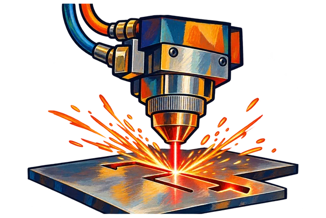
Ítrio88,906 uIntegra cristais de YAG usados em equipamentos a laser. 40Sólido25 °C / 1 atmMetal de transição ZrZircônio91,222 uSeu dióxido forma a cerâmica de algumas facas de cozinha. 41Sólido25 °C / 1 atmMetal de transição NbNióbio92,906 uSuas ligas integram ímãs de aparelhos de ressonância. 42Sólido25 °C / 1 atmMetal de transição Mo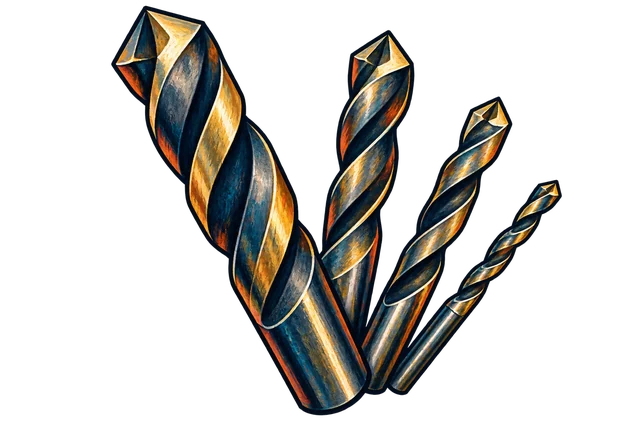
Molibdênio95,95 uMelhora a resistência de aços usados em brocas. 43Sólido25 °C / 1 atmMetal de transição TcTecnécio[97]Compostos com Tc-99m ajudam a formar imagens na cintilografia. 44Sólido25 °C / 1 atmMetal de transição Ru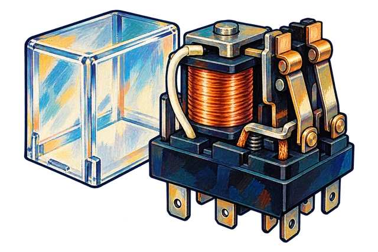
Rutênio101,07 uÉ usado em contatos e componentes eletrônicos. 45Sólido25 °C / 1 atmMetal de transição Rh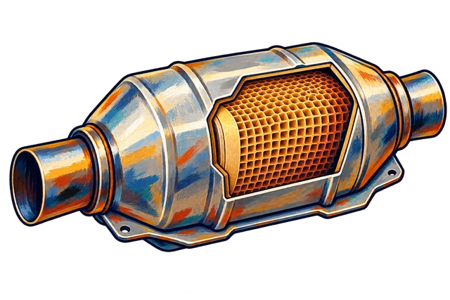
Ródio102,91 uEm catalisadores, ajuda a reduzir poluentes do escapamento. 46Sólido25 °C / 1 atmMetal de transição Pd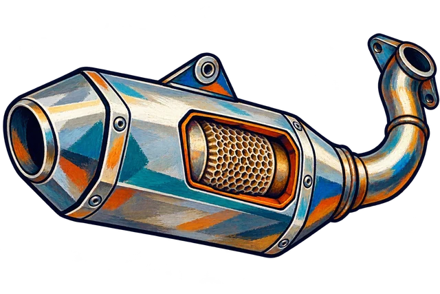
Paládio106,42 uParticipa de catalisadores no escapamento de veículos. 47Sólido25 °C / 1 atmMetal de transição Ag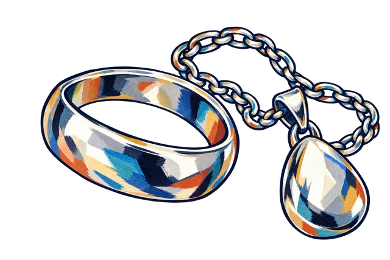
Prata107,87 uSuas ligas dão forma a joias e talheres. 48Sólido25 °C / 1 atmOutro metal Cd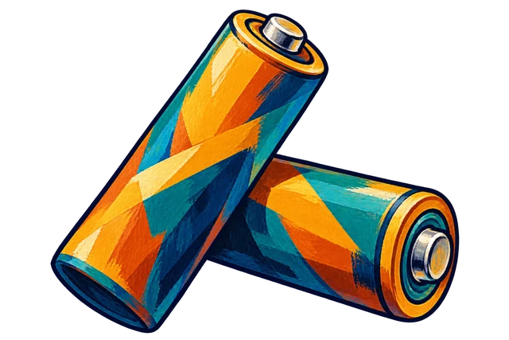
Cádmio112,41 uSeus compostos participam de baterias de níquel-cádmio. 49Sólido25 °C / 1 atmOutro metal In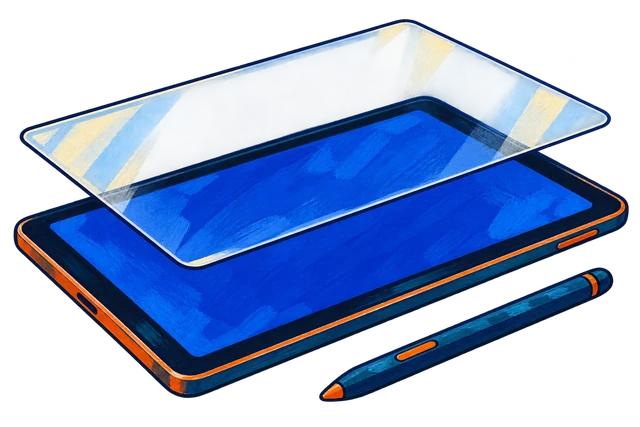
Índio114,82 uÓxidos de índio e estanho formam camadas condutoras em telas. 50Sólido25 °C / 1 atmOutro metal Sn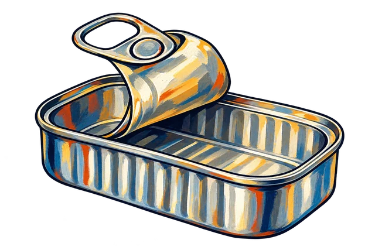
Estanho118,71 uReveste o aço de algumas latas de alimentos. 51Sólido25 °C / 1 atmSemimetal SbAntimônio121,76 uCompostos de antimônio ajudam a retardar chamas em materiais. 52Sólido25 °C / 1 atmSemimetal Te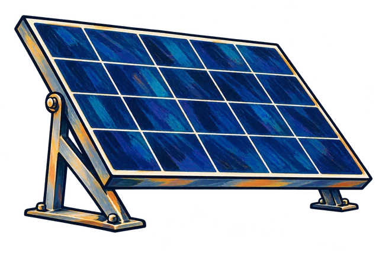
Telúrio127,60 uO telureto de cádmio é usado em painéis solares. 53Sólido25 °C / 1 atmHalogênio IIodo126,90 uCompostos de iodo são adicionados ao sal iodado. 54Gasoso25 °C / 1 atmGás nobre XeXenônio131,29 uSeu gás emite luz intensa em lâmpadas de flash. 55Sólido25 °C / 1 atmMetal alcalino Cs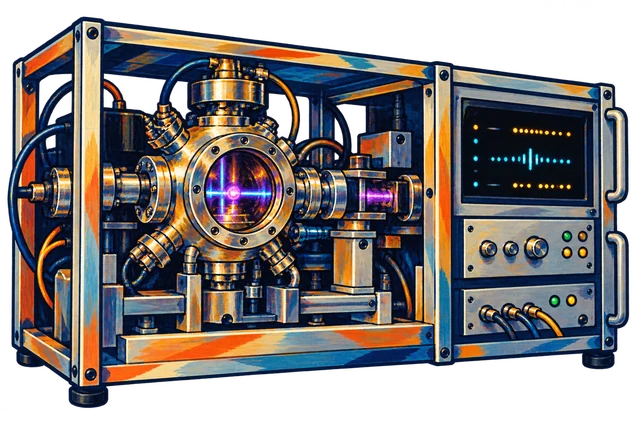
Césio132,91 uUma transição do césio-133 é a referência para o segundo. 56Sólido25 °C / 1 atmMetal alcalinoterroso BaBário137,33 uO sulfato de bário integra algumas formulações de tinta. 57Sólido25 °C / 1 atmLantanídeo LaLantânio138,91 uSeu óxido integra vidros de lentes de alta qualidade. 58Sólido25 °C / 1 atmLantanídeo CeCério140,12 uParticipa da liga que produz faíscas em isqueiros. 59Sólido25 °C / 1 atmLantanídeo PrPraseodímio140,91 uCompostos de praseodímio integram lentes de proteção de vidreiros. 60Sólido25 °C / 1 atmLantanídeo NdNeodímio144,24 uCom ferro e boro, forma ímãs usados em fones de ouvido. 61Sólido25 °C / 1 atmLantanídeo Pm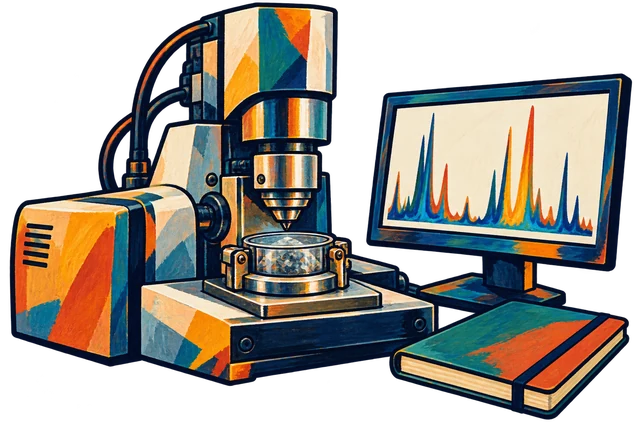
Promécio[145]Sua química é investigada em estudos com compostos. 62Sólido25 °C / 1 atmLantanídeo Sm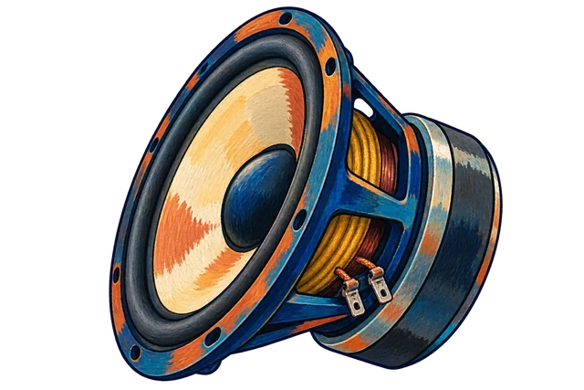
Samário150,36 uCom cobalto, forma ímãs usados em alguns alto-falantes. 63Sólido25 °C / 1 atmLantanídeo Eu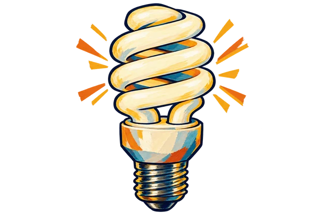
Európio151,96 uSeus compostos ajudam a produzir luz vermelha em fluorescentes. 64Sólido25 °C / 1 atmLantanídeo GdGadolínio157,25 uCompostos de gadolínio são usados como contraste em ressonância. 65Sólido25 °C / 1 atmLantanídeo Tb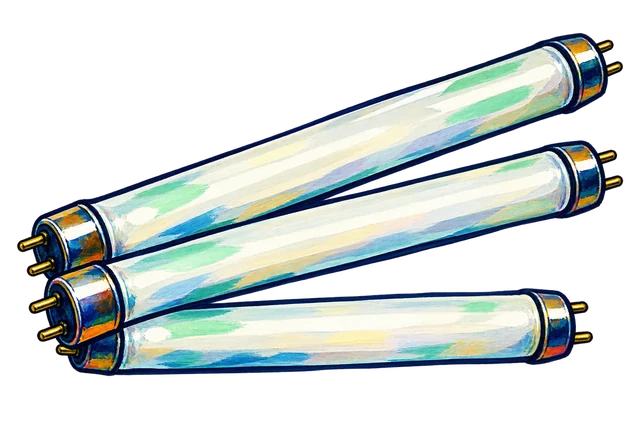
Térbio158,93 uSeus compostos ajudam a produzir luz verde em fluorescentes. 66Sólido25 °C / 1 atmLantanídeo Dy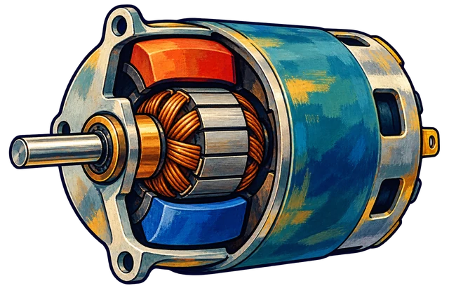
Disprósio162,50 uAjuda ímãs de certos motores a manter a força quando aquecidos. 67Sólido25 °C / 1 atmLantanídeo Ho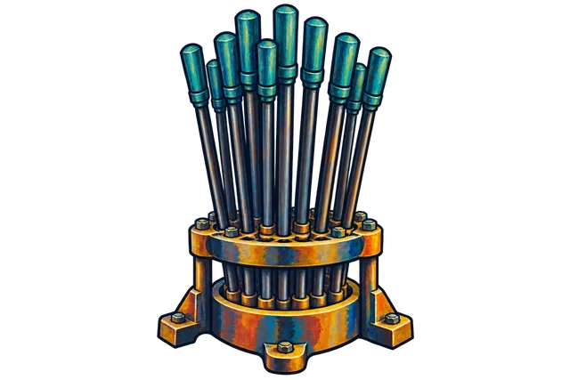
Hólmio164,93 uPode absorver nêutrons em barras de controle de reatores. 68Sólido25 °C / 1 atmLantanídeo ErÉrbio167,26 uÍons de érbio ajudam a amplificar sinais de luz em fibras ópticas. 69Sólido25 °C / 1 atmLantanídeo TmTúlio168,93 uO Tm-170 pode ser fonte de raios X em equipamentos portáteis. 70Sólido25 °C / 1 atmLantanídeo Yb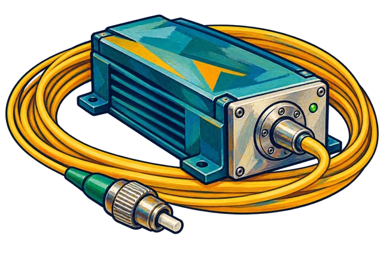
Itérbio173,05 uÍons de itérbio integram materiais usados em lasers. 71Sólido25 °C / 1 atmLantanídeo LuLutécio174,97 uCompostos de lutécio integram cristais detectores de aparelhos PET. 72Sólido25 °C / 1 atmMetal de transição Hf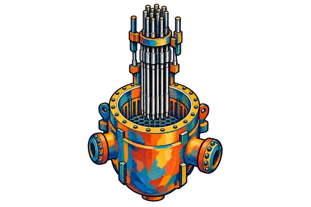
Háfnio178,49 uÉ usado em barras de controle de reatores. 73Sólido25 °C / 1 atmMetal de transição Ta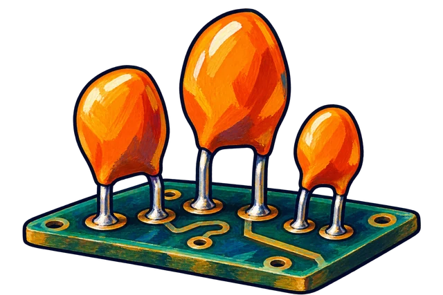
Tântalo180,95 uCapacitores de tântalo estão em eletrônicos portáteis. 74Sólido25 °C / 1 atmMetal de transição WTungstênio183,84 uForma o filamento de lâmpadas incandescentes. 75Sólido25 °C / 1 atmMetal de transição Re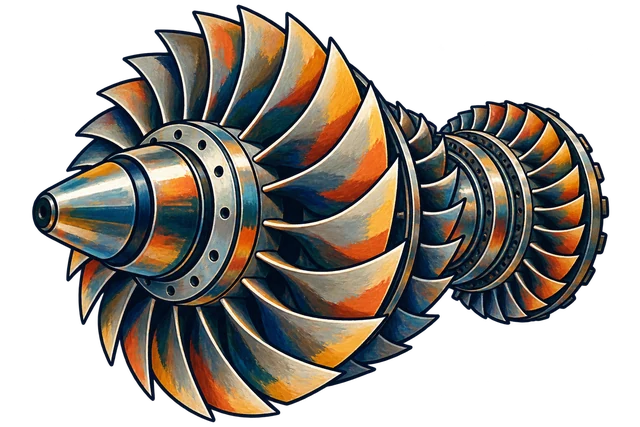
Rênio186,21 uIntegra ligas resistentes ao calor de turbinas. 76Sólido25 °C / 1 atmMetal de transição OsÓsmio190,23 uUso tradicional: ligas duras em pontas de canetas-tinteiro. 77Sólido25 °C / 1 atmMetal de transição Ir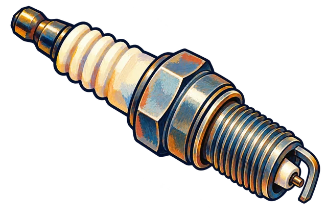
Irídio192,22 uIntegra eletrodos resistentes de velas de ignição. 78Sólido25 °C / 1 atmMetal de transição Pt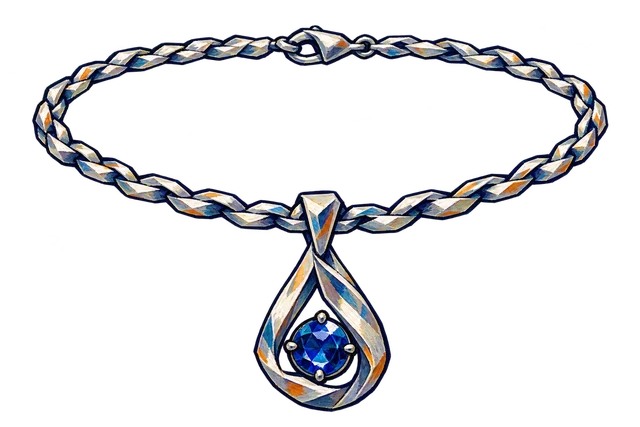
Platina195,08 uÉ usada em joias e resiste à corrosão. 79Sólido25 °C / 1 atmMetal de transição AuOuro196,97 uSuas ligas são usadas em alianças e outras joias. 80Líquido25 °C / 1 atmOutro metal Hg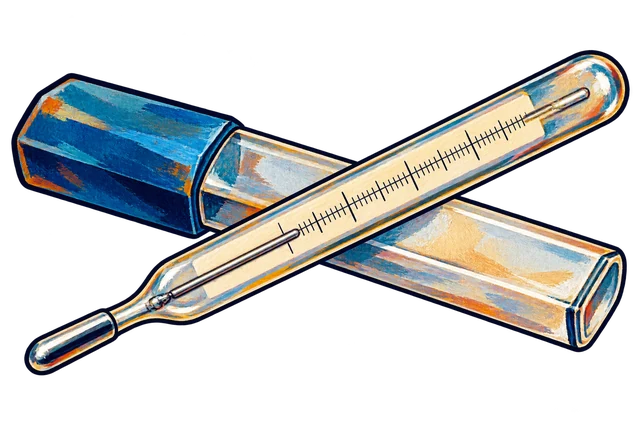
Mercúrio200,59 uUso histórico: termômetros com coluna de metal líquido. 81Sólido25 °C / 1 atmOutro metal TlTálio204,38 uO sulfeto de tálio é usado em certos sensores de luz. 82Sólido25 °C / 1 atmOutro metal Pb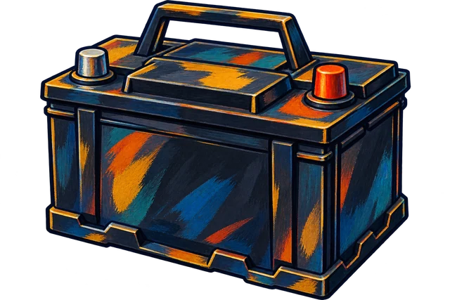
Chumbo207,2 uÉ usado nas baterias de chumbo-ácido dos carros. 83Sólido25 °C / 1 atmOutro metal BiBismuto208,98 uO oxicloreto de bismuto dá efeito perolado a cosméticos. 84Sólido25 °C / 1 atmOutro metal Po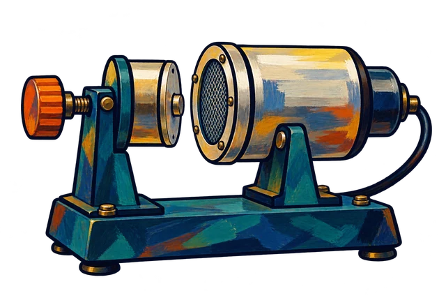
Polônio[209]O Po-210 emite partículas alfa utilizadas em pesquisas. 85Não determinado25 °C / 1 atmHalogênio AtAstato[210]É estudado em laboratório; sem aplicação cotidiana. 86Gasoso25 °C / 1 atmGás nobre Rn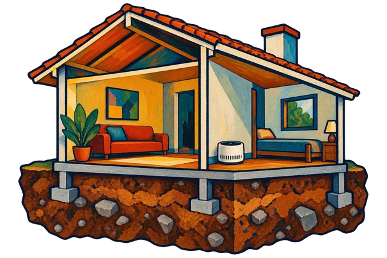
Radônio[222]É um gás radioativo que pode passar do solo ao interior de casas. 87Não determinado25 °C / 1 atmMetal alcalino Fr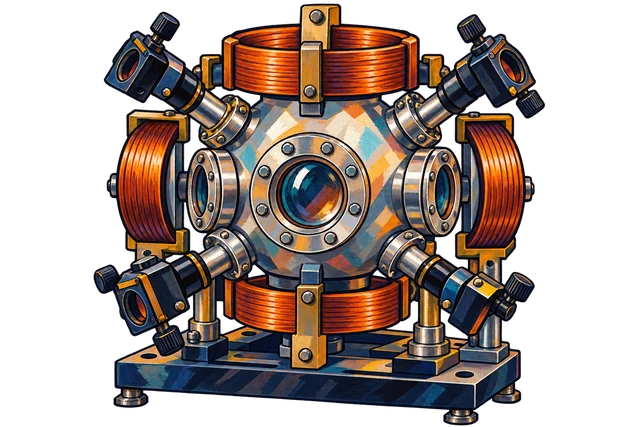
Frâncio[223]Seus átomos são estudados em armadilhas de laboratório. 88Sólido25 °C / 1 atmMetal alcalinoterroso Ra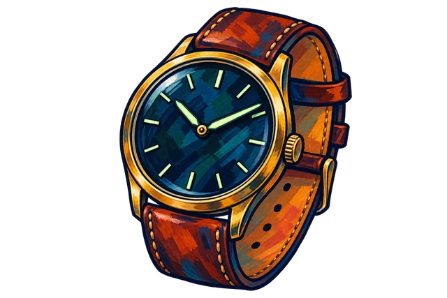
Rádio[226]Uso histórico: tintas luminosas em mostradores. 89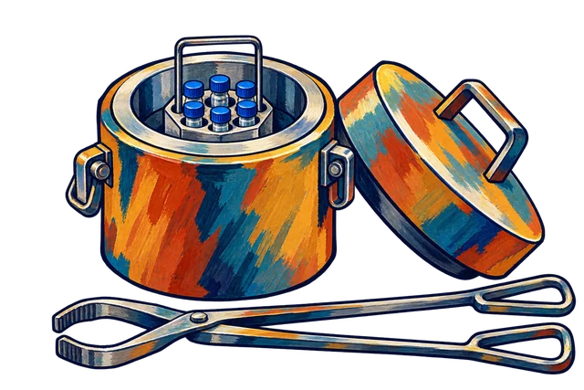
Actínio[227]O Ac-225 é estudado em terapias que usam partículas alfa. 90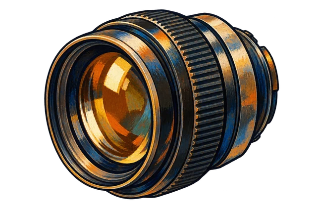
Tório232,04 uUso histórico: seu óxido foi empregado em lentes. 91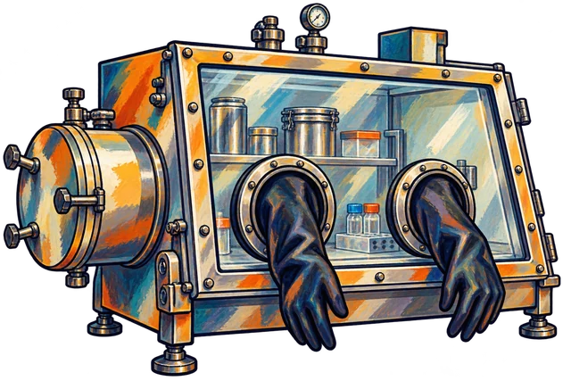
Protactínio231,04 uTem uso restrito à pesquisa científica. 92 Laurêncio[262]Produzido para estudar os elementos mais pesados.
104Não determinado25 °C / 1 atmMetal de transição
RfRutherfórdio[267]É produzido em aceleradores para pesquisas com átomos pesados.
105Não determinado25 °C / 1 atmMetal de transição
DbDúbnio[268]Produzido em laboratório para pesquisa científica.
106Não determinado25 °C / 1 atmMetal de transição
SgSeabórgio[269]Seus compostos permitem estudar ligações em átomos superpesados.
107Não determinado25 °C / 1 atmMetal de transição
BhBóhrio[270]Seus compostos são estudados em experimentos na fase gasosa.
108Não determinado25 °C / 1 atmMetal de transição
HsHássio[269]Sua química é investigada em poucos átomos.
109Não determinado25 °C / 1 atmMetal de transição
MtMeitnério[277]Feito em laboratório; sem aplicação cotidiana.
110Não determinado25 °C / 1 atmMetal de transição
DsDarmstádtio[281]Produzido para estudar núcleos muito pesados.
111Não determinado25 °C / 1 atmMetal de transição
RgRoentgênio[282]É estudado por meio de seu decaimento.
112Não determinado25 °C / 1 atmOutro metal
CnCopernício[285]Átomos isolados são estudados sobre superfícies de ouro.
113Não determinado25 °C / 1 atmOutro metal
NhNihônio[286]Sua interação com superfícies já foi medida em laboratório.
114Não determinado25 °C / 1 atmOutro metal
FlFleróvio[290]A baixa reatividade de seus átomos é tema de pesquisa.
115Não determinado25 °C / 1 atmOutro metal
McMoscóvio[290]Seus átomos já foram estudados em experimentos de química.
116Não determinado25 °C / 1 atmOutro metal
LvLivermório[293]Não tem aplicação fora da pesquisa.
117Não determinado25 °C / 1 atmHalogênio
TsTenessino[294]Foi produzido pela união de núcleos de cálcio e berquélio.
118Não determinado25 °C / 1 atmGás nobre
OgOganessônio[294]Seu estado físico ainda não foi confirmado experimentalmente.
Laurêncio[262]Produzido para estudar os elementos mais pesados.
104Não determinado25 °C / 1 atmMetal de transição
RfRutherfórdio[267]É produzido em aceleradores para pesquisas com átomos pesados.
105Não determinado25 °C / 1 atmMetal de transição
DbDúbnio[268]Produzido em laboratório para pesquisa científica.
106Não determinado25 °C / 1 atmMetal de transição
SgSeabórgio[269]Seus compostos permitem estudar ligações em átomos superpesados.
107Não determinado25 °C / 1 atmMetal de transição
BhBóhrio[270]Seus compostos são estudados em experimentos na fase gasosa.
108Não determinado25 °C / 1 atmMetal de transição
HsHássio[269]Sua química é investigada em poucos átomos.
109Não determinado25 °C / 1 atmMetal de transição
MtMeitnério[277]Feito em laboratório; sem aplicação cotidiana.
110Não determinado25 °C / 1 atmMetal de transição
DsDarmstádtio[281]Produzido para estudar núcleos muito pesados.
111Não determinado25 °C / 1 atmMetal de transição
RgRoentgênio[282]É estudado por meio de seu decaimento.
112Não determinado25 °C / 1 atmOutro metal
CnCopernício[285]Átomos isolados são estudados sobre superfícies de ouro.
113Não determinado25 °C / 1 atmOutro metal
NhNihônio[286]Sua interação com superfícies já foi medida em laboratório.
114Não determinado25 °C / 1 atmOutro metal
FlFleróvio[290]A baixa reatividade de seus átomos é tema de pesquisa.
115Não determinado25 °C / 1 atmOutro metal
McMoscóvio[290]Seus átomos já foram estudados em experimentos de química.
116Não determinado25 °C / 1 atmOutro metal
LvLivermório[293]Não tem aplicação fora da pesquisa.
117Não determinado25 °C / 1 atmHalogênio
TsTenessino[294]Foi produzido pela união de núcleos de cálcio e berquélio.
118Não determinado25 °C / 1 atmGás nobre
OgOganessônio[294]Seu estado físico ainda não foi confirmado experimentalmente.Nenhum elemento encontrado. Experimente outro nome, símbolo ou número.
Uma coleção para explorar
Um cordel aberto para todo mundo.
A arte convida. A química explica. Escolha suas cores, ajuste a leitura e percorra as histórias dos elementos no seu ritmo.